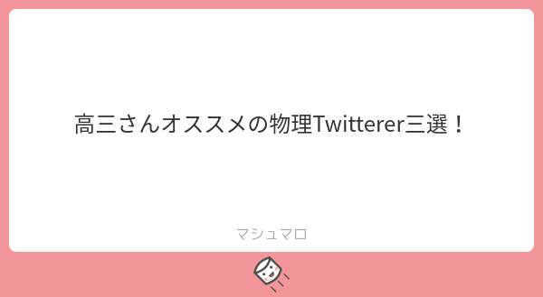
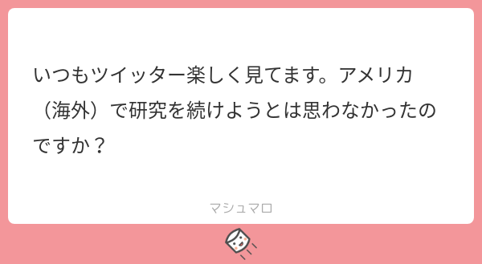
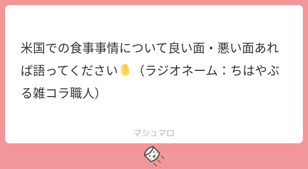

39: Ultracold Atoms Enable Everything
Starring


Show notes
目次
0:00 イントロ
1:24 Takasan さんの自己紹介
10:26 科学哲学
- 日本科学哲学会
- 科学基礎論学会
- 時空の哲学 - Wikipedia
- Daily Life:科学哲学と鳥類学の比喩をファインマンと結びつけたのは誰か
伊勢田哲治先生のブログ - 脳内超伝導については
25:59 非平衡状態
- 光誘起超伝導
- フロッケ状態
- フロッケ・エンジニアリング：物性を制御する新たな方法 - イベントカレンダー - 東京工業大学 理学院 物理学系
- Experimental realization of the topological Haldane model with ultracold fermions - Nature
2016年のノーベル物理学賞の解説 (PDF)にも引用されている。 - Oka and Aoki, Phys. Rev. B 79, 081406(R) (2009) - Photovoltaic Hall effect in graphene (arXiv)
- Light-induced anomalous Hall effect in graphene - Nature Physics (arXiv)
- 理研、量子スケールでもアクティブマター特有の相転移の発生を理論的に証明 - TECH+
1:11:19 アイディアの出し方、バークレー
- 固体物理 - アグネ技術センター
- 日本物理学会誌 - 一般社団法人 日本物理学会
- Moore and Balents, Phys. Rev. B 75, 121306(R) (2007) - Topological invariants of time-reversal-invariant band structures (arXiv)
- Moore, The birth of topological insulators - Nature
1:27:20 質問の極意
1:42:43 本屋の棚全部見る
1:48:20 おたより
1:48:32 フェライトこねこねさん「実験と理論で盛り上がり方が乖離している分野は？」
1:56:10 フェライトこねこねさん「論文を読むのにおすすめなガジェットは？」
- iPad Pro 12.9 inch
- iPadの定番ノートアプリ「GoodNotes 5」が基本無料に、ノート3冊まで - マイナビニュース
- Mendeley - Reference Management Software
2:02:10 模範囚さんからのおたより
2:04:15 匿名さんからのおたより

- 部品（山田杏奈） (@tjmlab) / Twitter
- Hal Tasaki (@Hal_Tasaki) / Twitter
- 佐々真一 (@sasa3341) / Twitter
- sasa3341’s blog
2:08:24 申請書
2:13:14 日本に帰ってきた経緯

2:15:20 米国での食事事情

2:22:52 お知らせ
- Online CMT seminars
- 出演して頂ける方や感想などをお待ちしております。 #interaxion
おたよりコーナーを作りました。質問、感想、要望などお待ちしております。https://t.co/rz0mlRKZU3
— Interaxion Podcast (@interaxion) January 12, 2021